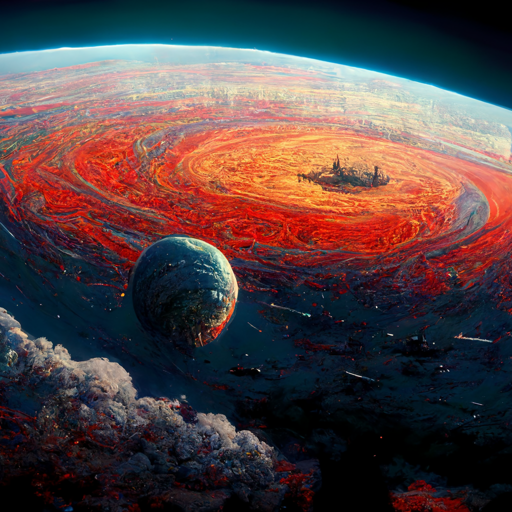

Cosas que me gustan
- Lo hace de una manera distinta a los demas ; en vez de usar un pagina web , usa discord
- Genera de manera mas facil y con resultados mas bonitos cuando el texto se basa en algo de fantasia o fututirista(es decir de la imaginación)
- Muestra cuatro resultados con solo una frase y tu eliges cuales quieres escalar o si quiers variar todas a partir de una de las cuatro imagenes
Otros detalles a mencionar
- Casi siempre muestra un resultado bonito y muy atractivo a la vista(ya que se centra en la generación de imagenes en un ambiente artístico)
- Al escalar una imagen se le añaden detalles
- Casi siempre hay gente usando la IA y generando imagenes las cuales también puedes descargar